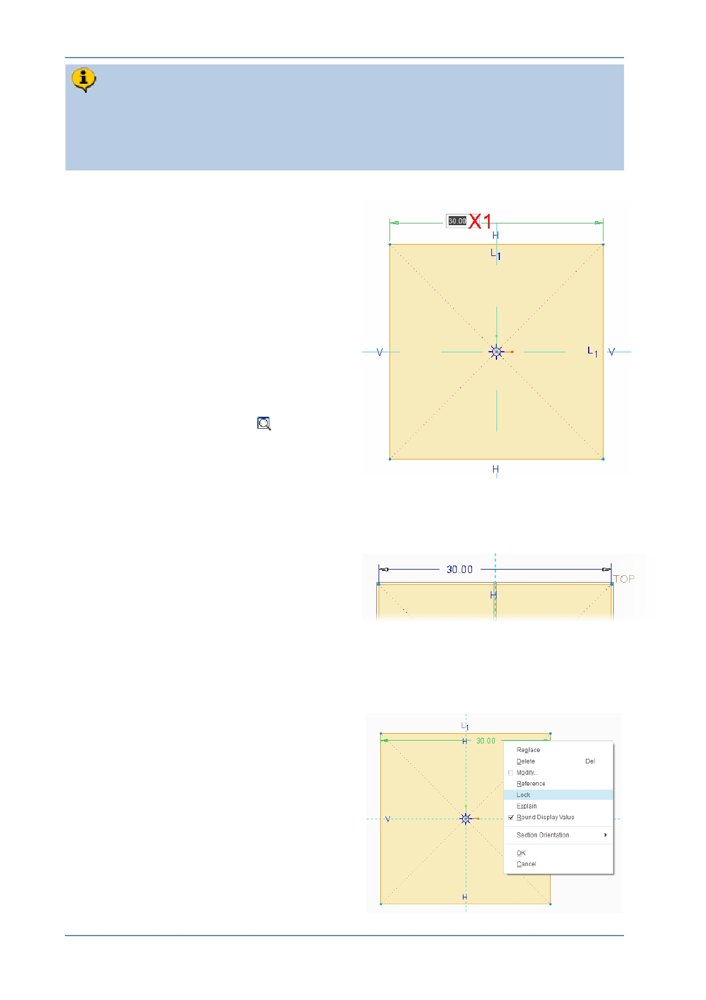

PTC Academic Program
There should now be just one dimension on the sketch. This is called a “weak”
dimension and it is displayed in a blue-gray color. Sketch dimensions are
“parametric” meaning when you change them the geometry will change to match
the new value. You will change the dimension to 30 and lock it.
4. Changing a dimension to 30:
Move the cursor over the dimension
value shown here at X1, and double-
click.
Type the new value of 30 and then
press ENTER .
Click in a blank area of the graphics
window to de-select the dimension.
The size of the square will change according
to the new dimension value. You have just
seen parametric control in action.
If necessary, click Refit
from the
Graphics toolbar. This will refit the
sketch in the graphics area.
The position and size of sketch lines are
controlled by a combination of dimension
constraints and geometric constraints.
Notice that the dimension changed to a blue
color, showing that it is now a strong
dimension.
Sketch geometry controlled by weak or strong dimensions can still be dragged. To fix
dimensions so they cannot change accidentally, they must be locked.
5. Locking a dimension
Click to select the dimension. It turns
green to show it is selected.
Right-click and hold on the selected
dimensions and from the pop-up
menu, select Lock .
Click in blank area of the graphics
window to de-select the dimension
© 2012 PTC
Creo Parametric 2.0 Primer
Page 18